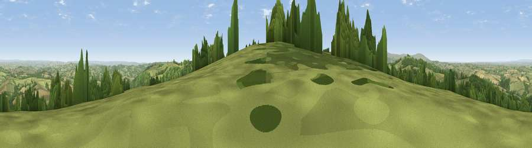

Viewpoint near Moretonhampstead
#2100 in England · top 2% of its area beats it · near MoretonhampsteadThe view, rendered

A 360° render of this exact spot computed from the terrain model, tree cover and land cover — summer colours, afternoon light, calibrated against photographs of famous viewpoints. Real trees, hedges and buildings will differ in detail.
The panorama
Grey silhouette: terrain skyline in each direction (720 bearings, Earth curvature and refraction included). Dashed green: skyline with trees (+15 m) and buildings (+8 m) as obstacles. Blue strip: how far the ground is visible on each bearing.
Where the view opens
Wedge length = distance to the farthest visible ground on that bearing (vegetation-aware). Rings at 10, 25 and 50 km.
What fills the view
50% grassland · 35% woodland · 14% cropland
Angular shares of the visible panorama (visual magnitude), not map area. Landscape diversity 0.44 (0–1 Shannon).
Key numbers
More beautiful places nearby
The staircase of upgrades: each row has a higher view potential than everything closer. Driving times are estimates from straight-line distance, calibrated against real road routing — check an actual route before setting out.
| Place | Direction | Drive | Score |
|---|---|---|---|
| Viewpoint near North Bovey | SW · 7 km | ~15 min | 77.8 |
| Viewpoint near North Bovey | SW · 8 km | ~15 min | 79.3 |
| Cairn | S · 9 km | ~18 min | 79.8 |
| Viewpoint near Haytor Vale | S · 10 km | ~20 min | 80.1 |
| Viewpoint near Buckland in the Moor | SSW · 16 km | ~28 min | 80.7 |
| Viewpoint near Kenton | ESE · 16 km | ~29 min | 82.9 |
| Viewpoint near Holcombe | SE · 21 km | ~35 min | 83.3 |
| Viewpoint near Shaldon | SE · 23 km | ~38 min | 83.8 |
50.68080, -3.73173 · source: screening · position refined by local search. Computed location — check access rights before visiting.